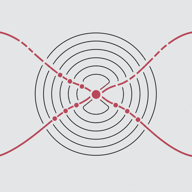

Generative dual sequencer synth

MUTAVIA II
A dual polymetric instrument for controlled mutation. Two interacting lanes feed a synthesis engine built for instability, cross-modulation, folding and evolving resonant motion.
Two polymetric sequencers mutate repeatably rather than randomly, then feed TZFM, ring modulation, wavefolding and dual resonant filters. Pattern structure and timbre evolve together, while PERF exposes fast variation without hiding the underlying lanes.
- Two independent polymetric sequencers
- Repeatable mutation + generative variation
- TZFM + ring modulation
- Wavefolding + dual resonant filters
- Sequence CV + trigger outputs
Desktop VST3 + standalone for Mac and Windows: Get the desktop version · Watch the Ableton Live demo
Available now
- Targets
- iPhoneiPad
- Formats
- StandaloneAUv3
- Beta
- Android
- Planned
- VST3 · Windows + macOS